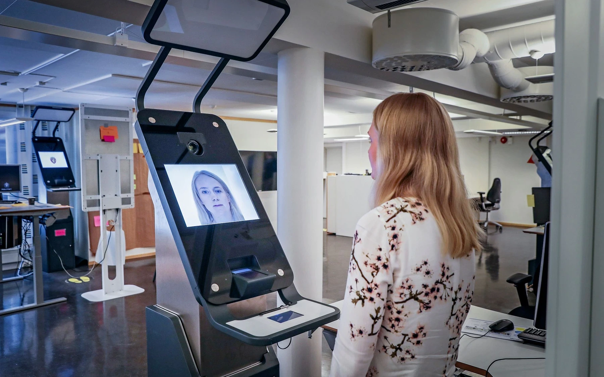
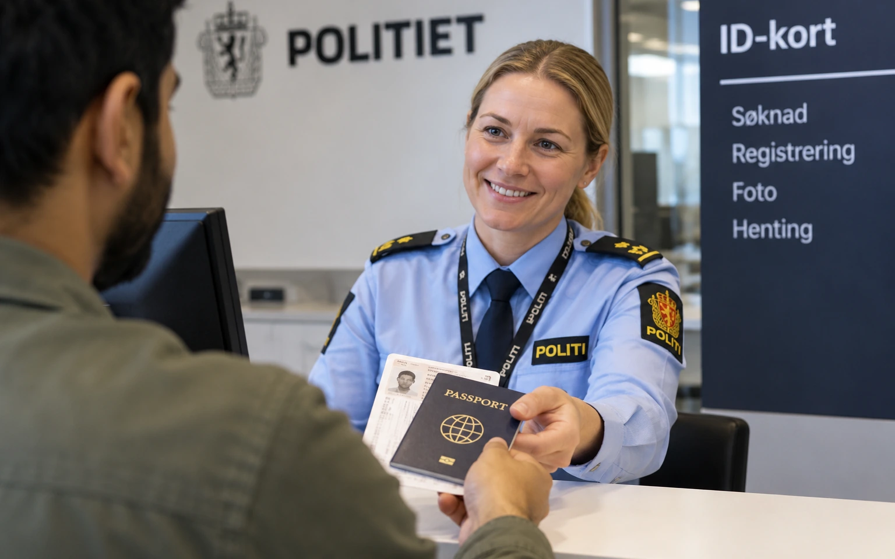
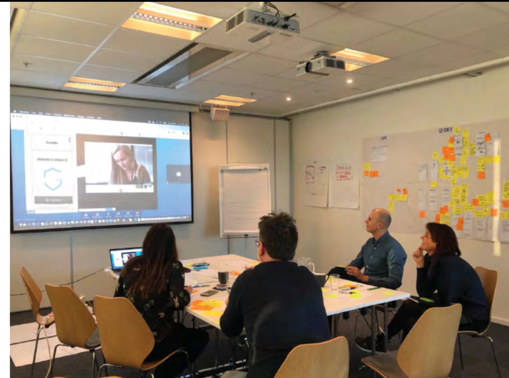
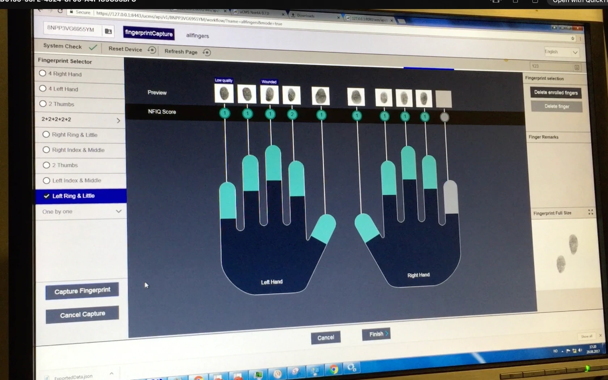
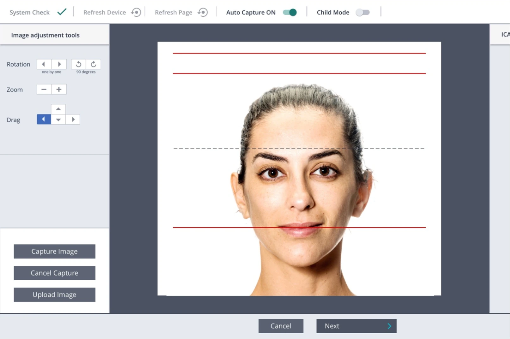
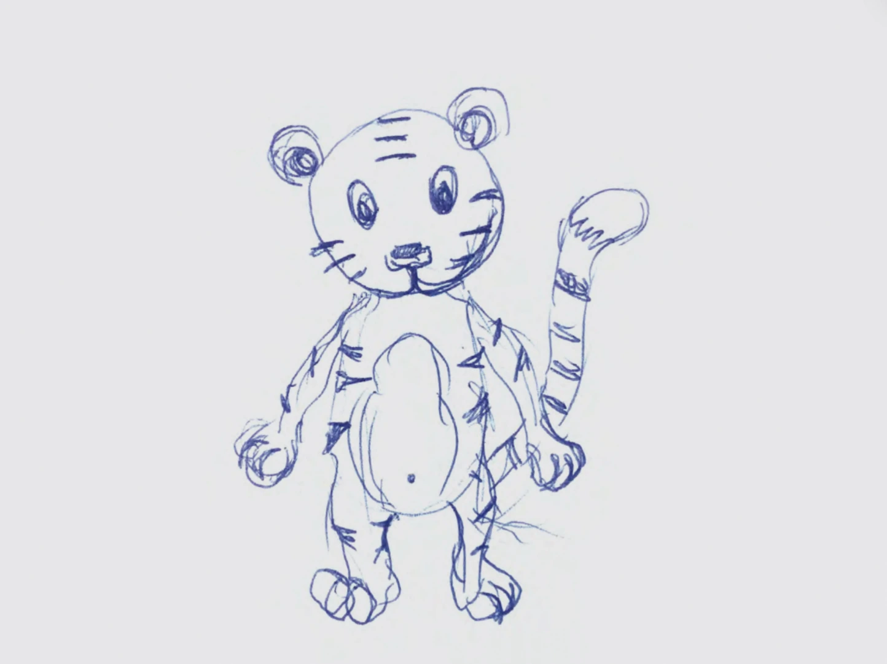

Politidirektoratet · Pass & ID
Designing a clearer path to passports and national ID cards.
Connecting the Pass and ID journey from first touchpoint to final verification.

Lead / Senior UX and Service Designer · Two and a half years
One service, several connected parts
Citizens used biometric equipment to capture a photograph, fingerprints and signature. Police officers then had to understand what had happened and continue the case in their own tools.
These parts could not be designed separately.
A decision in the kiosk could change what an officer saw later. Hardware limited what the interaction could do. Security and regulation limited what information we could show. Police procedures set what should happen when something went wrong.
I worked with users, client representatives, international authorities, EU legal experts and teams responsible for both hardware and digital services.
Before designing individual screens, we mapped how people, information, equipment and systems depended on one another.


The goal was not to hide the complexity. It was to decide which parts users needed to understand and which parts the service should handle for them.

Questioning the assumption behind the photo flow
The police wanted biometric capture to run continuously. Once a photograph met the biometric requirements, the system would accept it and continue automatically.
That was the right logic for operations. But it assumed users would be comfortable continuing without seeing the photograph. I questioned that assumption and tested the flow with users.
The result was clear.
People expected to see the photograph before continuing. They wanted to know what had been captured, and they wanted the option to take another.
That expectation made sense. The photograph would appear on a passport or national ID card, and it could stay in use for several years.
The evidence changed the flow. Users now review the photograph and either accept it or retake it before continuing.

The most efficient flow on paper did not match what people expected.
Children needed a different interaction
The same interaction did not work for every age group.
The standard flow relied on written and spoken instructions. Testing showed that young children could not reliably be expected to respond to those instructions at the right moment during biometric capture.
This was a mismatch between the interaction model and how this user group behaves.
I developed a child-mode concept with visual cues close to the camera. One version used a tiger to draw the child’s attention to the right place.
In testing, children looked towards the camera more reliably. That made it easier to capture a usable biometric photograph.
The change was small, but the reasoning mattered. We did not ask the child to adapt to the system. We adapted the capture to the child.

Officers needed information, within strict limits
The internal systems handled sensitive identity and biometric data under strict security and confidentiality requirements.
This created a design tension. Officers needed enough information to understand what was happening and act correctly. Security, confidentiality and regulation limited what could be exposed, and how.
That tension raised the practical questions: what information could we show, where could we show it, and how much context did an officer need to act correctly?
The service also had to meet biometric standards, hardware limits, police procedures and national and international regulation.
A and AA are the regulatory baseline for public-sector websites and apps in Norway. This project was designed to meet AAA, which shaped interaction design, content and visual presentation across the service.
Deciding where the complexity should live
The complexity here was real. Different users, biometric hardware, regulation, security requirements and police operations all had to work together.
That complexity could not be removed.
The design task was to understand how these conditions depended on one another. Then decide where users needed information or control, and where the system should carry the complexity.
That principle shaped decisions at very different scales: from questioning whether an uninterrupted flow was right for users, to adapting biometric capture for young children.